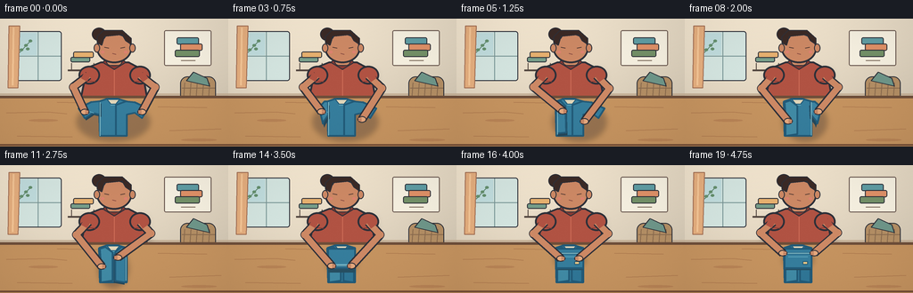
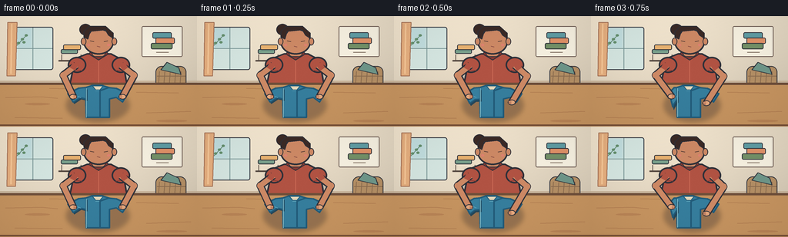
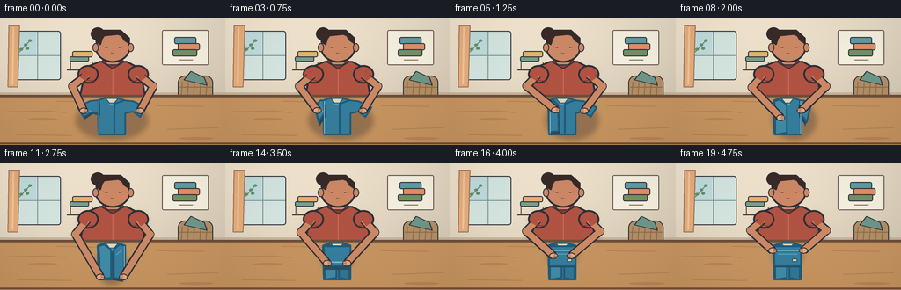
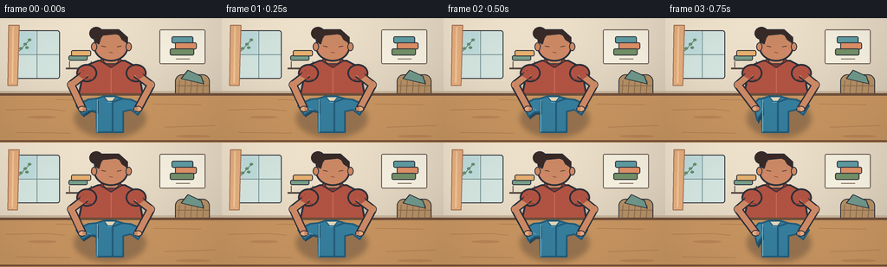

CODING AGENTS AS PIXEL WORLD MODELS
traex/GPT-5.6-Sol · motion_rationality_0037
点击播放 · 原生 RGB 像素
逐轮保存的候选
回放视频、检查图与代码变化。
每份候选均可单独播放。实际图片检查记录在下方工具轨迹中。
候选 01播放与检查图
点击播放 · 原生 RGB 像素


展开代码变化
--- 上一保存版本
+++ 本次保存版本
@@ -0,0 +1,340 @@
+from pathlib import Path
+import math
+import numpy as np
+from PIL import Image, ImageDraw, ImageFilter
+import artifact_io
+
+W, H, N, SCALE = 256, 144, 20, 4
+CASE_DIR = Path(__file__).resolve().parent
+
+# Rich, warm illustrative palette
+INK = (45, 48, 57)
+SKIN = (205, 137, 101)
+SKIN_LIGHT = (230, 169, 126)
+HAIR = (59, 42, 38)
+SHIRT = (177, 83, 67)
+SHIRT_DARK = (133, 58, 52)
+CLOTH = (54, 126, 157)
+CLOTH_DARK = (34, 91, 121)
+CLOTH_LIGHT = (92, 164, 187)
+TABLE = (198, 148, 96)
+
+
+def scp(points):
+ return [(int(round(x*SCALE)), int(round(y*SCALE))) for x, y in points]
+
+
+def box(b):
+ return tuple(int(round(v*SCALE)) for v in b)
+
+
+def poly(draw, pts, fill, outline=None, width=1):
+ draw.polygon(scp(pts), fill=fill)
+ if outline:
+ draw.line(scp(pts + [pts[0]]), fill=outline, width=width*SCALE, joint='curve')
+
+
+def ell(draw, b, fill, outline=None, width=1):
+ draw.ellipse(box(b), fill=fill, outline=outline, width=width*SCALE if outline else 1)
+
+
+def line(draw, pts, fill, width, joint='curve'):
+ draw.line(scp(pts), fill=fill, width=width*SCALE, joint=joint)
+
+
+def rounded(draw, b, radius, fill, outline=None, width=1):
+ draw.rounded_rectangle(box(b), radius=radius*SCALE, fill=fill, outline=outline,
+ width=width*SCALE if outline else 1)
+
+
+def mix(a, b, t):
+ return a + (b-a)*t
+
+
+def ease(t):
+ t = max(0.0, min(1.0, t))
+ return t*t*(3-2*t)
+
+
+def lerp_pt(a, b, t):
+ return (mix(a[0], b[0], t), mix(a[1], b[1], t))
+
+
+def interp_poly(a, b, t):
+ return [lerp_pt(x, y, t) for x, y in zip(a, b)]
+
+
+def draw_shadow(base, pts=None, ellipse=None, blur=4, alpha=75):
+ layer = Image.new('RGBA', base.size, (0,0,0,0))
+ d = ImageDraw.Draw(layer)
+ if pts:
+ d.polygon(scp(pts), fill=(35,33,42,alpha))
+ if ellipse:
+ d.ellipse(box(ellipse), fill=(35,33,42,alpha))
+ layer = layer.filter(ImageFilter.GaussianBlur(blur*SCALE))
+ base.alpha_composite(layer)
+
+
+def background(frame):
+ # high-res painted wall gradient
+ arr = np.zeros((H*SCALE, W*SCALE, 4), dtype=np.uint8)
+ yy, xx = np.mgrid[0:H*SCALE, 0:W*SCALE]
+ y = yy/(H*SCALE-1)
+ x = xx/(W*SCALE-1)
+ light = 1 - .13*y + .035*np.cos((x-.25)*math.pi)
+ base = np.array([239, 226, 204], dtype=float)
+ rgb = np.clip(base[None,None,:]*light[:,:,None], 0, 255)
+ arr[:,:,:3] = rgb.astype(np.uint8); arr[:,:,3] = 255
+ im = Image.fromarray(arr, 'RGBA')
+ d = ImageDraw.Draw(im)
+
+ # window and soft sunlit panel
+ rounded(d, (16,14,69,70), 3, (213,230,225), INK, 1)
+ line(d, [(42.5,15),(42.5,69)], (122,151,151), 1)
+ line(d, [(17,42),(68,42)], (122,151,151), 1)
+ # distant sky and simple leafy branch
+ poly(d, [(18,16),(41,16),(41,41),(18,41)], (193,221,222))
+ line(d, [(22,38),(35,24)], (91,132,108), 1)
+ for bx, by in [(24,35),(29,30),(34,25),(31,34)]:
+ ell(d, (bx-2,by-1.5,bx+2,by+1.5), (102,145,111))
+ # curtain
+ poly(d, [(10,8),(22,8),(20,78),(9,78)], (230,175,127), (164,112,85), 1)
+ line(d, [(15,10),(14,75)], (246,199,151), 2)
+
+ # wall art reinforces household/folding context
+ rounded(d, (184,13,237,53), 2, (247,241,225), (101,83,75), 1)
+ # tiny folded-clothing icon
+ rounded(d, (198,21,223,29), 2, (96,157,164), INK, 1)
+ rounded(d, (202,28,227,36), 2, (224,145,104), INK, 1)
+ rounded(d, (196,35,224,43), 2, (116,145,104), INK, 1)
+ line(d, [(203,47),(219,47)], (128,111,96), 1)
+
+ # left shelf with towels
+ line(d, [(76,58),(108,58)], (84,72,65), 2)
+ rounded(d, (79,43,101,49), 2, (120,159,139), INK, 1)
+ rounded(d, (82,37,105,44), 2, (231,177,112), INK, 1)
+ line(d, [(80,50),(80,58)], (84,72,65), 1)
+ line(d, [(105,50),(105,58)], (84,72,65), 1)
+
+ # floor/wall boundary and right basket behind table
+ line(d, [(0,85),(256,85)], (198,177,151), 2)
+ rounded(d, (202,65,242,105), 8, (180,143,101), INK, 1)
+ for x0 in range(207,240,7):
+ line(d, [(x0,72),(x0-2,99)], (139,108,79), 1)
+ line(d, [(204,78),(241,78)], (139,108,79), 1)
+ line(d, [(203,90),(241,90)], (139,108,79), 1)
+ # towel peeking out
+ poly(d, [(209,70),(217,60),(232,67),(235,76)], (111,151,138), INK, 1)
+ return im
+
+
+def draw_person_body(im):
+ d = ImageDraw.Draw(im)
+ # torso behind worktable
+ draw_shadow(im, pts=[(92,58),(164,58),(171,103),(85,103)], blur=4, alpha=45)
+ poly(d, [(98,55),(113,49),(144,49),(159,57),(167,102),(88,102)], SHIRT, INK, 2)
+ # shirt seam and collar
+ poly(d, [(115,49),(128,57),(141,49),(137,46),(119,46)], SHIRT_DARK, INK, 1)
+ line(d, [(128,58),(128,88)], (205,108,87), 1)
+ # neck
+ rounded(d, (119,35,137,53), 5, SKIN, INK, 1)
+ # ears, face and hair
+ ell(d, (108,16,148,50), SKIN, INK, 2)
+ ell(d, (105,28,112,38), SKIN, INK, 1)
+ ell(d, (145,28,152,38), SKIN, INK, 1)
+ # hair silhouette with bun
+ ell(d, (103,10,119,25), HAIR, INK, 1)
+ poly(d, [(109,27),(109,20),(116,13),(137,13),(147,22),(147,29),(141,25),
+ (137,18),(117,20),(114,30)], HAIR, INK, 1)
+ # face details, looking downward
+ line(d, [(117,32),(122,33)], (76,54,49), 1)
+ line(d, [(135,33),(140,32)], (76,54,49), 1)
+ line(d, [(126,39),(130,40)], (135,76,65), 1)
+ ell(d, (113,36,117,39), (222,130,112))
+ ell(d, (139,36,143,39), (222,130,112))
+ # sleeve caps establish arm attachment
+ ell(d, (88,53,112,74), SHIRT, INK, 2)
+ ell(d, (145,53,169,74), SHIRT, INK, 2)
+ line(d, [(93,69),(107,71)], SHIRT_DARK, 1)
+ line(d, [(150,71),(164,69)], SHIRT_DARK, 1)
+
+
+def draw_table(im):
+ d = ImageDraw.Draw(im)
+ # table shadow and top plane
+ draw_shadow(im, pts=[(3,94),(250,94),(256,144),(0,144)], blur=3, alpha=45)
+ poly(d, [(0,87),(256,87),(256,144),(0,144)], TABLE)
+ line(d, [(0,88),(256,88)], (111,79,58), 3)
+ # subtle wood grain
+ for pts in [[(7,106),(54,105),(75,107)],[(177,99),(232,100)],
+ [(19,132),(81,133)],[(190,126),(248,124)],[(64,94),(112,95)]]:
+ line(d, pts, (177,125,81), 1)
+ ell(d, (32,113,65,116), (185,132,86))
+ ell(d, (203,135,243,138), (185,132,86))
+
+
+def cloth_phase(f):
+ # deliberate beats: open shirt, left fold, right fold, bottom fold, press
+ if f <= 1: return ('left', 0.0)
+ if f <= 6: return ('left', ease((f-1)/5))
+ if f <= 11: return ('right', ease((f-6)/5))
+ if f <= 16: return ('bottom', ease((f-11)/5))
+ return ('done', ease((f-16)/3))
+
+
+def draw_clothing(im, f):
+ d = ImageDraw.Draw(im)
+ phase, u = cloth_phase(f)
+ # stationary center, neck and shoulders. Coordinates are an angled tabletop view.
+ center = [(111,93),(120,90),(132,90),(142,93),(142,132),(112,132)]
+ left0 = [(112,93),(102,94),(88,101),(95,112),(104,106),(112,108),(112,132),(124,132),(124,97)]
+ left1 = [(112,94),(118,92),(126,98),(126,130),(113,132),(113,108)]
+ right0 = [(141,93),(151,94),(166,101),(159,112),(151,106),(142,108),(142,132),(130,132),(130,97)]
+ right1 = [(141,94),(136,92),(129,98),(129,130),(141,132),(141,108)]
+
+ # Contact shadow evolves with shrinking garment.
+ if phase == 'left':
+ lx = mix(88,112,u); rx = 166
+ elif phase == 'right':
+ lx = 112; rx = mix(166,142,u)
+ else:
+ lx, rx = 112, 142
+ ybottom = 132 if phase in ('left','right') else mix(132,112,u if phase=='bottom' else 1)
+ draw_shadow(im, ellipse=(lx-2, 94, rx+2, ybottom+6), blur=3, alpha=75)
+
+ # central garment panel
+ poly(d, center, CLOTH, CLOTH_DARK, 2)
+ # Collar: remains visible throughout, unmistakably a T-shirt at opening.
+ poly(d, [(120,91),(124,96),(130,96),(134,91)], (225,214,185), CLOTH_DARK, 1)
+ line(d, [(124,97),(130,97)], CLOTH_LIGHT, 1)
+
+ if phase == 'left':
+ # right half remains open while left side arcs inward.
+ poly(d, right0, CLOTH, CLOTH_DARK, 2)
+ lp = interp_poly(left0, left1, u)
+ # lifted flap shadow underneath makes folding legible
+ shadowp = [(x+1.5, y+2.5+2*math.sin(math.pi*u)) for x,y in lp]
+ poly(d, shadowp, (37,72,91,130))
+ poly(d, lp, tuple(int(mix(CLOTH[i], CLOTH_LIGHT[i], .22*math.sin(math.pi*u))) for i in range(3)), CLOTH_DARK, 2)
+ # sleeve seam rides with flap
+ seam = [lerp_pt((96,103),(117,99),u), lerp_pt((105,106),(123,104),u)]
+ line(d, seam, CLOTH_LIGHT, 1)
+ # folding edge highlight
+ e1 = lerp_pt((112,94),(113,94),u); e2 = lerp_pt((112,132),(113,130),u)
+ line(d, [e1,e2], (128,187,200), 1)
+ else:
+ poly(d, left1, (65,139,166), CLOTH_DARK, 2)
+ if phase == 'right':
+ rp = interp_poly(right0, right1, u)
+ shadowp = [(x-1.5,y+2.5+2*math.sin(math.pi*u)) for x,y in rp]
+ poly(d, shadowp, (37,72,91,130))
+ poly(d, rp, tuple(int(mix(CLOTH[i], CLOTH_LIGHT[i], .20*math.sin(math.pi*u))) for i in range(3)), CLOTH_DARK, 2)
+ seam = [lerp_pt((159,103),(138,99),u), lerp_pt((150,106),(132,104),u)]
+ line(d, seam, CLOTH_LIGHT, 1)
+ line(d, [lerp_pt((142,94),(141,94),u),lerp_pt((142,132),(141,130),u)], (128,187,200), 1)
+ else:
+ poly(d, right1, (48,119,151), CLOTH_DARK, 2)
+
+ if phase in ('bottom','done'):
+ bu = u if phase == 'bottom' else 1.0
+ # Cover/restate compact upper packet, then animate lower half upward.
+ poly(d, [(112,94),(142,94),(142,116),(112,116)], CLOTH, CLOTH_DARK, 2)
+ if bu < .5:
+ q = ease(bu*2)
+ flap = [(112,116),(142,116),(142,mix(132,118,q)),(112,mix(132,118,q))]
+ else:
+ q = ease((bu-.5)*2)
+ flap = [(112,mix(116,99,q)),(142,mix(116,99,q)),(142,116),(112,116)]
+ offset = 2+3*math.sin(math.pi*bu)
+ poly(d, [(x,y+offset) for x,y in flap], (39,80,99))
+ foldcol = tuple(int(mix(CLOTH[i], CLOTH_LIGHT[i], .28*math.sin(math.pi*bu))) for i in range(3))
+ poly(d, flap, foldcol, CLOTH_DARK, 2)
+ line(d, [flap[0],flap[1]], (137,194,204), 1)
+ if bu > .55:
+ # folded hem visible on finished packet
+ yy = mix(114,103,(bu-.55)/.45)
+ line(d, [(116,yy),(138,yy)], CLOTH_LIGHT, 1)
+
+ # stable little woven label
+ if phase == 'done' or (phase == 'bottom' and u > .75):
+ rounded(d, (132,108,138,112), 1, (231,198,132), CLOTH_DARK, 1)
+
+
+def hand_positions(f):
+ # Piecewise hand trajectories timed to the garment edges.
+ if f <= 1:
+ return (95,105), (159,105)
+ if f <= 6:
+ u=ease((f-1)/5)
+ # left hand carries left sleeve inward; right hand anchors cloth
+ return lerp_pt((95,105),(122,104),u), lerp_pt((154,112),(142,116),u)
+ if f <= 11:
+ u=ease((f-6)/5)
+ # hands swap jobs, right carrying the second side inward
+ return lerp_pt((117,116),(114,114),u), lerp_pt((159,105),(132,104),u)
+ if f <= 16:
+ u=ease((f-11)/5)
+ # both lift lower hem toward collar
+ return lerp_pt((114,129),(117,105),u), lerp_pt((140,129),(137,105),u)
+ u=ease((f-16)/3)
+ # gentle press and slight retreat so final result is visible
+ return lerp_pt((117,105),(110,99),u), lerp_pt((137,105),(145,99),u)
+
+
+def draw_arms(im, f):
+ d = ImageDraw.Draw(im)
+ lh, rh = hand_positions(f)
+ # elbows point out naturally, but shift with reach to keep limb lengths consistent.
+ le = (82 + .18*(lh[0]-95), 77 + .15*(lh[1]-105))
+ re = (174 + .18*(rh[0]-159), 77 + .15*(rh[1]-105))
+ left_path = [(99,64), le, lh]
+ right_path = [(157,64), re, rh]
+ # dark contour and warm skin core
+ for path in (left_path, right_path):
+ line(d, path, INK, 10)
+ line(d, path, SKIN, 7)
+ # elbow soft joint
+ ex,ey=path[1]; ell(d,(ex-4,ey-4,ex+4,ey+4),SKIN)
+ # sleeves redrawn over shoulder connection
+ line(d, [(98,62),(94,69)], SHIRT, 8)
+ line(d, [(158,62),(163,69)], SHIRT, 8)
+ # hands oriented across cloth; fingers are small readable marks
+ for (hx,hy), side in [(lh,-1),(rh,1)]:
+ ell(d, (hx-5.0,hy-3.6,hx+5.0,hy+3.6), SKIN_LIGHT, INK, 1)
+ # three aligned fingertips toward garment center
+ direction = 1 if side==-1 else -1
+ for dy in (-1.7,0,1.7):
+ line(d, [(hx+direction*.5,hy+dy),(hx+direction*4,hy+dy+.25)], (164,99,78), 1)
+
+
+def render(f):
+ im = background(f)
+ draw_person_body(im)
+ draw_table(im)
+ draw_clothing(im, f)
+ draw_arms(im, f)
+ d = ImageDraw.Draw(im)
+ # foreground table lip lends depth
+ line(d, [(0,142),(256,142)], (117,78,54), 2)
+ # fixed soft vignette and stable film grain
+ arr = np.asarray(im.convert('RGB')).astype(np.float32)
+ yy,xx=np.mgrid[0:H*SCALE,0:W*SCALE]
+ cx,cy=W*SCALE/2,H*SCALE/2
+ r=((xx-cx)/(W*SCALE*.72))**2+((yy-cy)/(H*SCALE*.78))**2
+ arr *= np.clip(1-.08*r, .86, 1)[:,:,None]
+ # deterministic fine texture, identical spatial pattern each frame (no flicker)
+ rng=np.random.default_rng(20261110)
+ noise=rng.normal(0,0.8,arr.shape[:2])[:,:,None]
+ arr=np.clip(arr+noise,0,255).astype(np.uint8)
+ out=Image.fromarray(arr).resize((W,H),Image.Resampling.LANCZOS).convert('RGB')
+ return np.asarray(out,dtype=np.uint8)
+
+
+def main():
+ frames=np.stack([render(i) for i in range(N)],axis=0)
+ assert frames.shape==(20,144,256,3) and frames.dtype==np.uint8
+ artifact_io.save(frames, CASE_DIR)
+ print('saved', frames.shape, 'to', CASE_DIR)
+
+if __name__=='__main__':
+ main()
候选 02播放与检查图
点击播放 · 原生 RGB 像素


展开代码变化
--- 上一保存版本
+++ 本次保存版本
@@ -266,12 +266,19 @@
return (95,105), (159,105)
if f <= 6:
u=ease((f-1)/5)
- # left hand carries left sleeve inward; right hand anchors cloth
- return lerp_pt((95,105),(122,104),u), lerp_pt((154,112),(142,116),u)
+ # left hand carries left sleeve inward; right hand keeps the far
+ # shoulder from sliding and is already ready for the second fold.
+ return lerp_pt((95,105),(122,104),u), lerp_pt((159,105),(151,105),u)
if f <= 11:
u=ease((f-6)/5)
- # hands swap jobs, right carrying the second side inward
- return lerp_pt((117,116),(114,114),u), lerp_pt((159,105),(132,104),u)
+ # Hands swap jobs. The right follows the moving sleeve edge inward;
+ # during the last beat both hands slide to the lower hem for stage 3.
+ left = lerp_pt((122,104),(114,129),u)
+ if u < .78:
+ right = lerp_pt((151,105),(132,104),u/.78)
+ else:
+ right = lerp_pt((132,104),(140,129),(u-.78)/.22)
+ return left, right
if f <= 16:
u=ease((f-11)/5)
# both lift lower hem toward collar
可观测工具轨迹
实际执行的命令与返回图片。
命令 1exit 0
/bin/bash -lc "cat prompt.txt && printf '\\n---RULES---\\n' && cat GENERATION_RULES.md && printf '\\n---SPEC---\\n' && cat task_spec.json"
命令 2exit 0
/bin/bash -lc "find . -maxdepth 2 -type f -printf '%p\\n' | sort"
命令 3exit 0
/bin/bash -lc "which ffmpeg; which python3; python3 - <<'PY'
try:
import PIL; print('PIL', PIL.__version__)
except Exception as e: print('no PIL',e)
try:
import cv2; print('cv2',cv2.__version__)
except Exception as e: print('no cv2',e)
try:
import numpy; print('numpy',numpy.__version__)
except Exception as e: print('no numpy',e)
PY"命令 4exit 0
/bin/bash -lc 'cat artifact_io.py'
命令 5exit 0
/bin/bash -lc "cat > generate.py <<'PY'
from pathlib import Path
import math
import numpy as np
from PIL import Image, ImageDraw, ImageFilter
import artifact_io
W, H, N, SCALE = 256, 144, 20, 4
CASE_DIR = Path(__file__).resolve().parent
# Rich, warm illustrative palette
INK = (45, 48, 57)
SKIN = (205, 137, 101)
SKIN_LIGHT = (230, 169, 126)
HAIR = (59, 42, 38)
SHIRT = (177, 83, 67)
SHIRT_DARK = (133, 58, 52)
CLOTH = (54, 126, 157)
CLOTH_DARK = (34, 91, 121)
CLOTH_LIGHT = (92, 164, 187)
TABLE = (198, 148, 96)
def scp(points):
return [(int(round(x*SCALE)), int(round(y*SCALE))) for x, y in points]
def box(b):
return tuple(int(round(v*SCALE)) for v in b)
def poly(draw, pts, fill, outline=None, width=1):
draw.polygon(scp(pts), fill=fill)
if outline:
draw.line(scp(pts + [pts[0]]), fill=outline, width=width*SCALE, joint='curve')
def ell(draw, b, fill, outline=None, width=1):
draw.ellipse(box(b), fill=fill, outline=outline, width=width*SCALE if outline else 1)
def line(draw, pts, fill, width, joint='curve'):
draw.line(scp(pts), fill=fill, width=width*SCALE, joint=joint)
def rounded(draw, b, radius, fill, outline=None, width=1):
draw.rounded_rectangle(box(b), radius=radius*SCALE, fill=fill, outline=outline,
width=width*SCALE if outline else 1)
def mix(a, b, t):
return a + (b-a)*t
def ease(t):
t = max(0.0, min(1.0, t))
return t*t*(3-2*t)
def lerp_pt(a, b, t):
return (mix(a[0], b[0], t), mix(a[1], b[1], t))
def interp_poly(a, b, t):
return [lerp_pt(x, y, t) for x, y in zip(a, b)]
def draw_shadow(base, pts=None, ellipse=None, blur=4, alpha=75):
layer = Image.new('RGBA', base.size, (0,0,0,0))
d = ImageDraw.Draw(layer)
if pts:
d.polygon(scp(pts), fill=(35,33,42,alpha))
if ellipse:
d.ellipse(box(ellipse), fill=(35,33,42,alpha))
layer = layer.filter(ImageFilter.GaussianBlur(blur*SCALE))
base.alpha_composite(layer)
def background(frame):
# high-res painted wall gradient
arr = np.zeros((H*SCALE, W*SCALE, 4), dtype=np.uint8)
yy, xx = np.mgrid[0:H*SCALE, 0:W*SCALE]
y = yy/(H*SCALE-1)
x = xx/(W*SCALE-1)
light = 1 - .13*y + .035*np.cos((x-.25)*math.pi)
base = np.array([239, 226, 204], dtype=float)
rgb = np.clip(base[None,None,:]*light[:,:,None], 0, 255)
arr[:,:,:3] = rgb.astype(np.uint8); arr[:,:,3] = 255
im = Image.fromarray(arr, 'RGBA')
d = ImageDraw.Draw(im)
# window and soft sunlit panel
rounded(d, (16,14,69,70), 3, (213,230,225), INK, 1)
line(d, [(42.5,15),(42.5,69)], (122,151,151), 1)
line(d, [(17,42),(68,42)], (122,151,151), 1)
# distant sky and simple leafy branch
poly(d, [(18,16),(41,16),(41,41),(18,41)], (193,221,222))
line(d, [(22,38),(35,24)], (91,132,108), 1)
for bx, by in [(24,35),(29,30),(34,25),(31,34)]:
ell(d, (bx-2,by-1.5,bx+2,by+1.5), (102,145,111))
# curtain
poly(d, [(10,8),(22,8),(20,78),(9,78)], (230,175,127), (164,112,85), 1)
line(d, [(15,10),(14,75)], (246,199,151), 2)
# wall art reinforces household/folding context
rounded(d, (184,13,237,53), 2, (247,241,225), (101,83,75), 1)
# tiny folded-clothing icon
rounded(d, (198,21,223,29), 2, (96,157,164), INK, 1)
rounded(d, (202,28,227,36), 2, (224,145,104), INK, 1)
rounded(d, (196,35,224,43), 2, (116,145,104), INK, 1)
line(d, [(203,47),(219,47)], (128,111,96), 1)
# left shelf with towels
line(d, [(76,58),(108,58)], (84,72,65), 2)
rounded(d, (79,43,101,49), 2, (120,159,139), INK, 1)
rounded(d, (82,37,105,44), 2, (231,177,112), INK, 1)
line(d, [(80,50),(80,58)], (84,72,65), 1)
line(d, [(105,50),(105,58)], (84,72,65), 1)
# floor/wall boundary and right basket behind table
line(d, [(0,85),(256,85)], (198,177,151), 2)
rounded(d, (202,65,242,105), 8, (180,143,101), INK, 1)
for x0 in range(207,240,7):
line(d, [(x0,72),(x0-2,99)], (139,108,79), 1)
line(d, [(204,78),(241,78)], (139,108,79), 1)
line(d, [(203,90),(241,90)], (139,108,79), 1)
# towel peeking out
poly(d, [(209,70),(217,60),(232,67),(235,76)], (111,151,138), INK, 1)
return im
def draw_person_body(im):
d = ImageDraw.Draw(im)
# torso behind worktable
draw_shadow(im, pts=[(92,58),(164,58),(171,103),(85,103)], blur=4, alpha=45)
poly(d, [(98,55),(113,49),(144,49),(159,57),(167,102),(88,102)], SHIRT, INK, 2)
# shirt seam and collar
poly(d, [(115,49),(128,57),(141,49),(137,46),(119,46)], SHIRT_DARK, INK, 1)
line(d, [(128,58),(128,88)], (205,108,87), 1)
# neck
rounded(d, (119,35,137,53), 5, SKIN, INK, 1)
# ears, face and hair
ell(d, (108,16,148,50), SKIN, INK, 2)
ell(d, (105,28,112,38), SKIN, INK, 1)
ell(d, (145,28,152,38), SKIN, INK, 1)
# hair silhouette with bun
ell(d, (103,10,119,25), HAIR, INK, 1)
poly(d, [(109,27),(109,20),(116,13),(137,13),(147,22),(147,29),(141,25),
(137,18),(117,20),(114,30)], HAIR, INK, 1)
# face details, looking downward
line(d, [(117,32),(122,33)], (76,54,49), 1)
line(d, [(135,33),(140,32)], (76,54,49), 1)
line(d, [(126,39),(130,40)], (135,76,65), 1)
ell(d, (113,36,117,39), (222,130,112))
ell(d, (139,36,143,39), (222,130,112))
# sleeve caps establish arm attachment
ell(d, (88,53,112,74), SHIRT, INK, 2)
ell(d, (145,53,169,74), SHIRT, INK, 2)
line(d, [(93,69),(107,71)], SHIRT_DARK, 1)
line(d, [(150,71),(164,69)], SHIRT_DARK, 1)
def draw_table(im):
d = ImageDraw.Draw(im)
# table shadow and top plane
draw_shadow(im, pts=[(3,94),(250,94),(256,144),(0,144)], blur=3, alpha=45)
poly(d, [(0,87),(256,87),(256,144),(0,144)], TABLE)
line(d, [(0,88),(256,88)], (111,79,58), 3)
# subtle wood grain
for pts in [[(7,106),(54,105),(75,107)],[(177,99),(232,100)],
[(19,132),(81,133)],[(190,126),(248,124)],[(64,94),(112,95)]]:
line(d, pts, (177,125,81), 1)
ell(d, (32,113,65,116), (185,132,86))
ell(d, (203,135,243,138), (185,132,86))
def cloth_phase(f):
# deliberate beats: open shirt, left fold, right fold, bottom fold, press
if f <= 1: return ('left', 0.0)
if f <= 6: return ('left', ease((f-1)/5))
if f <= 11: return ('right', ease((f-6)/5))
if f <= 16: return ('bottom', ease((f-11)/5))
return ('done', ease((f-16)/3))
def draw_clothing(im, f):
d = ImageDraw.Draw(im)
phase, u = cloth_phase(f)
# stationary center, neck and shoulders. Coordinates are an angled tabletop view.
center = [(111,93),(120,90),(132,90),(142,93),(142,132),(112,132)]
left0 = [(112,93),(102,94),(88,101),(95,112),(104,106),(112,108),(112,132),(124,132),(124,97)]
left1 = [(112,94),(118,92),(126,98),(126,130),(113,132),(113,108)]
right0 = [(141,93),(151,94),(166,101),(159,112),(151,106),(142,108),(142,132),(130,132),(130,97)]
right1 = [(141,94),(136,92),(129,98),(129,130),(141,132),(141,108)]
# Contact shadow evolves with shrinking garment.
if phase == 'left':
lx = mix(88,112,u); rx = 166
elif phase == 'right':
lx = 112; rx = mix(166,142,u)
else:
lx, rx = 112, 142
ybottom = 132 if phase in ('left','right') else mix(132,112,u if phase=='bottom' else 1)
draw_shadow(im, ellipse=(lx-2, 94, rx+2, ybottom+6), blur=3, alpha=75)
# central garment panel
poly(d, center, CLOTH, CLOTH_DARK, 2)
# Collar: remains visible throughout, unmistakably a T-shirt at opening.
poly(d, [(120,91),(124,96),(130,96),(134,91)], (225,214,185), CLOTH_DARK, 1)
line(d, [(124,97),(130,97)], CLOTH_LIGHT, 1)
if phase == 'left':
# right half remains open while left side arcs inward.
poly(d, right0, CLOTH, CLOTH_DARK, 2)
lp = interp_poly(left0, left1, u)
# lifted flap shadow underneath makes folding legible
shadowp = [(x+1.5, y+2.5+2*math.sin(math.pi*u)) for x,y in lp]
poly(d, shadowp, (37,72,91,130))
poly(d, lp, tuple(int(mix(CLOTH[i], CLOTH_LIGHT[i], .22*math.sin(math.pi*u))) for i in range(3)), CLOTH_DARK, 2)
# sleeve seam rides with flap
seam = [lerp_pt((96,103),(117,99),u), lerp_pt((105,106),(123,104),u)]
line(d, seam, CLOTH_LIGHT, 1)
# folding edge highlight
e1 = lerp_pt((112,94),(113,94),u); e2 = lerp_pt((112,132),(113,130),u)
line(d, [e1,e2], (128,187,200), 1)
else:
poly(d, left1, (65,139,166), CLOTH_DARK, 2)
if phase == 'right':
rp = interp_poly(right0, right1, u)
shadowp = [(x-1.5,y+2.5+2*math.sin(math.pi*u)) for x,y in rp]
poly(d, shadowp, (37,72,91,130))
poly(d, rp, tuple(int(mix(CLOTH[i], CLOTH_LIGHT[i], .20*math.sin(math.pi*u))) for i in range(3)), CLOTH_DARK, 2)
seam = [lerp_pt((159,103),(138,99),u), lerp_pt((150,106),(132,104),u)]
line(d, seam, CLOTH_LIGHT, 1)
line(d, [lerp_pt((142,94),(141,94),u),lerp_pt((142,132),(141,130),u)], (128,187,200), 1)
else:
poly(d, right1, (48,119,151), CLOTH_DARK, 2)
if phase in ('bottom','done'):
bu = u if phase == 'bottom' else 1.0
# Cover/restate compact upper packet, then animate lower half upward.
poly(d, [(112,94),(142,94),(142,116),(112,116)], CLOTH, CLOTH_DARK, 2)
if bu < .5:
q = ease(bu*2)
flap = [(112,116),(142,116),(142,mix(132,118,q)),(112,mix(132,118,q))]
else:
q = ease((bu-.5)*2)
flap = [(112,mix(116,99,q)),(142,mix(116,99,q)),(142,116),(112,116)]
offset = 2+3*math.sin(math.pi*bu)
poly(d, [(x,y+offset) for x,y in flap], (39,80,99))
foldcol = tuple(int(mix(CLOTH[i], CLOTH_LIGHT[i], .28*math.sin(math.pi*bu))) for i in range(3))
poly(d, flap, foldcol, CLOTH_DARK, 2)
line(d, [flap[0],flap[1]], (137,194,204), 1)
if bu > .55:
# folded hem visible on finished packet
yy = mix(114,103,(bu-.55)/.45)
line(d, [(116,yy),(138,yy)], CLOTH_LIGHT, 1)
# stable little woven label
if phase == 'done' or (phase == 'bottom' and u > .75):
rounded(d, (132,108,138,112), 1, (231,198,132), CLOTH_DARK, 1)
def hand_positions(f):
# Piecewise hand trajectories timed to the garment edges.
if f <= 1:
return (95,105), (159,105)
if f <= 6:
u=ease((f-1)/5)
# left hand carries left sleeve inward; right hand anchors cloth
return lerp_pt((95,105),(122,104),u), lerp_pt((154,112),(142,116),u)
if f <= 11:
u=ease((f-6)/5)
# hands swap jobs, right carrying the second side inward
return lerp_pt((117,116),(114,114),u), lerp_pt((159,105),(132,104),u)
if f <= 16:
u=ease((f-11)/5)
# both lift lower hem toward collar
return lerp_pt((114,129),(117,105),u), lerp_pt((140,129),(137,105),u)
u=ease((f-16)/3)
# gentle press and slight retreat so final result is visible
return lerp_pt((117,105),(110,99),u), lerp_pt((137,105),(145,99),u)
def draw_arms(im, f):
d = ImageDraw.Draw(im)
lh, rh = hand_positions(f)
# elbows point out naturally, but shift with reach to keep limb lengths consistent.
le = (82 + .18*(lh[0]-95), 77 + .15*(lh[1]-105))
re = (174 + .18*(rh[0]-159), 77 + .15*(rh[1]-105))
left_path = [(99,64), le, lh]
right_path = [(157,64), re, rh]
# dark contour and warm skin core
for path in (left_path, right_path):
line(d, path, INK, 10)
line(d, path, SKIN, 7)
# elbow soft joint
ex,ey=path[1]; ell(d,(ex-4,ey-4,ex+4,ey+4),SKIN)
# sleeves redrawn over shoulder connection
line(d, [(98,62),(94,69)], SHIRT, 8)
line(d, [(158,62),(163,69)], SHIRT, 8)
# hands oriented across cloth; fingers are small readable marks
for (hx,hy), side in [(lh,-1),(rh,1)]:
ell(d, (hx-5.0,hy-3.6,hx+5.0,hy+3.6), SKIN_LIGHT, INK, 1)
# three aligned fingertips toward garment center
direction = 1 if side==-1 else -1
for dy in (-1.7,0,1.7):
line(d, [(hx+direction*.5,hy+dy),(hx+direction*4,hy+dy+.25)], (164,99,78), 1)
def render(f):
im = background(f)
draw_person_body(im)
draw_table(im)
draw_clothing(im, f)
draw_arms(im, f)
d = ImageDraw.Draw(im)
# foreground table lip lends depth
line(d, [(0,142),(256,142)], (117,78,54), 2)
# fixed soft vignette and stable film grain
arr = np.asarray(im.convert('RGB')).astype(np.float32)
yy,xx=np.mgrid[0:H*SCALE,0:W*SCALE]
cx,cy=W*SCALE/2,H*SCALE/2
r=((xx-cx)/(W*SCALE*.72))**2+((yy-cy)/(H*SCALE*.78))**2
arr *= np.clip(1-.08*r, .86, 1)[:,:,None]
# deterministic fine texture, identical spatial pattern each frame (no flicker)
rng=np.random.default_rng(20261110)
noise=rng.normal(0,0.8,arr.shape[:2])[:,:,None]
arr=np.clip(arr+noise,0,255).astype(np.uint8)
out=Image.fromarray(arr).resize((W,H),Image.Resampling.LANCZOS).convert('RGB')
return np.asarray(out,dtype=np.uint8)
def main():
frames=np.stack([render(i) for i in range(N)],axis=0)
assert frames.shape==(20,144,256,3) and frames.dtype==np.uint8
artifact_io.save(frames, CASE_DIR)
print('saved', frames.shape, 'to', CASE_DIR)
if __name__=='__main__':
main()
PY
python3 generate.py
ls -lh pixels.npz inspection.png index.html frames/00.png frames/19.png"命令 6exit 0
/bin/bash -lc 'python3 -m py_compile generate.py'
命令 7exit 0
/bin/bash -lc "python3 generate.py && python3 - <<'PY'
from pathlib import Path
import numpy as np
from PIL import Image
p=Path('.')
a=np.load('pixels.npz')['pixels']
assert a.shape==(144,256,20) and a.dtype==np.uint32
fs=sorted(Path('frames').glob('*.png'))
assert len(fs)==20
for p in fs:
im=Image.open(p)
assert im.mode=='RGB' and im.size==(256,144)
print('validated: 20 RGB frames, 256x144, packed tensor',a.shape)
PY"视觉工具实际返回图片 1

视觉工具实际返回图片 2

保存候选 2 份；完成命令 7 次；可验证图片返回 2 张。原始 API 响应与完整日志保留在本地。